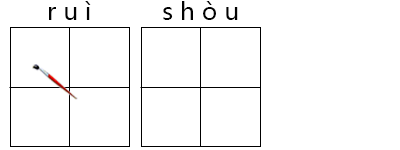
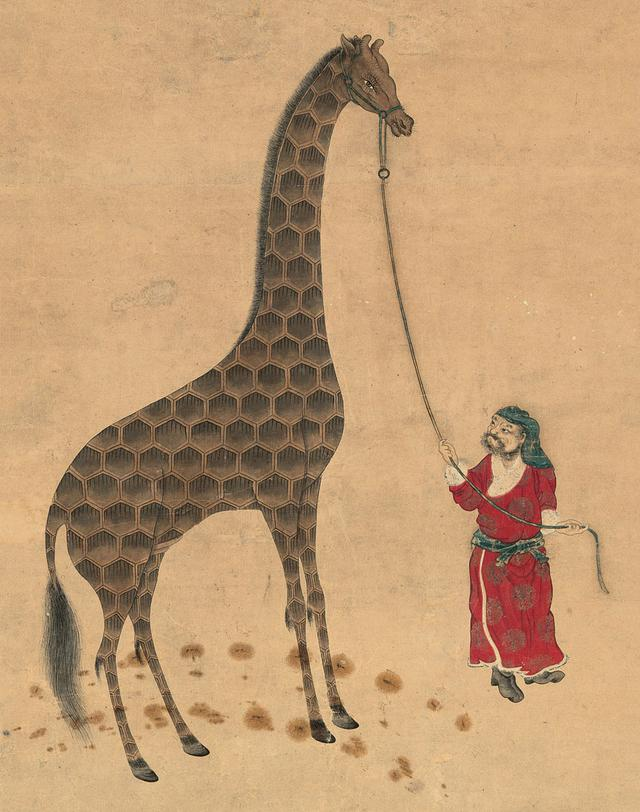
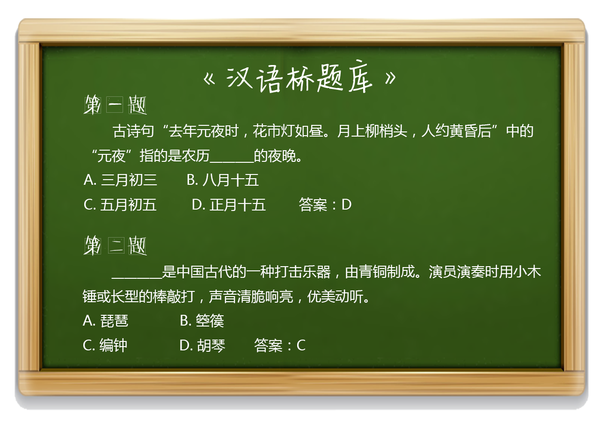

2016-11-21阅读（6,330）

“女猎人”上马
数学天才完胜白衣女孩

中国古代汉族神话传说中有四大瑞兽，分别是东方青龙、南方朱雀、西方白虎（又有说法白虎为凶兽，代表西方肃杀之气）、北方玄武，另外还有麒麟，凤凰，貔貅等也属于瑞兽。瑞兽是原始人群体的亲属、祖先对于保护神的一种图腾崇拜，是人类历史上最早的一种文化现象。它们从远古时代一直沿存至今。

麒麟图
【文化小知识】
麒麟原是长颈鹿：郑和从非洲带回了“动物园”
众所周知郑和七下西洋，其中四下西洋到了阿拉伯半岛和非洲一带。每到一处，都向国王赠送大量礼品，包括金银、宝器、丝绸、瓷器，表示了明朝政府与这些国家发展友好关系的愿望。同时，这些地方的国家纷纷派出使节跟随郑和舰队到中国访问，携带一些当地的奇特产，其中很多是动物。最为传奇的当属“麒麟”的原型——长颈鹿。
在永乐十四年（1416年）腊月初十，有麻林（今肯尼亚马林迪）、卜剌哇（今索马里的布腊瓦）、木骨都束（今索马里的摩沙迪沙）、阿丹（今也门的亚丁）、剌撒（今北也门的萨那）、忽鲁谟斯（今波斯湾霍木兹海峡的伊朗格什姆）等非洲东海岸诸国的使节来中国，皇帝朱棣在皇宫接见了这批各国使者，赐给使者永乐钱、文绮袭衣等。
永乐十五年（1417年）秋天，郑和第五次下西洋，趁护送各国使者回国的机会，再次对东非各国进行访问。访问的路线还是由近及远，先到占城，再到爪哇国，经旧港、满加拉、彭亨，到苏门答腊、南浡里，再向西到锡兰山，到柯枝、占里，再向西北到忽鲁谟斯，再南下进入阿拉伯海，到剌撒、阿丹，地海峡，到木骨都束、卜剌哇、麻木。然后向东，横渡印度洋，经溜山、锡兰山回国。在途经柯枝国时，郑和受永乐皇帝的委托，为柯枝国（一群岛屿）举行了镇国之山的敕封仪式。原来，柯枝国与中国的关系一直很好，中国使臣多次来到柯枝国，带来明朝皇帝赏赐的金帐幔、织锦文绮、彩帛、华盖。柯枝国也几次派遣使者来中国访问，既是回访，也提出要求：请求明朝皇帝赐给诰印，并封他们国家的山。郑和这次出使柯枝国，正式向柯枝国王可亦里赠了诰印，封他为柯枝国国王，并且还封他们国家的一座山为镇国山，来记叙这些事情。
郑和第五次下西洋路线图
永乐十四年（1416年）十一月，明朝永乐皇帝朱棣决定迁都北平。在北平营造皇宫，需要大兴土木，建造宫殿，也要有大批奇珍异宝来装饰皇宫。在宫苑，也需要大批珍贵稀奇的禽兽来充实。郑和出使西域，正好乘机入海取宝，解决新建皇宫的装饰问题。于是，郑和第五次下西洋，既带回了和国人民的友谊，也带回了一批西域国家进献的珍贵礼品。这次礼物多是珍禽异兽，这些东西，在京城引起了轰动，给大明朝带来了欢快的气氛。当“西南之国，有以异禽来献”时，群臣“莫为引领快睹，顿足惊愕，以为稀世之罕闻，中国所未见”。人们纷纷奔走相告，一群鲁谟斯国进献的狮子、金钱豹、西马，阿丹国进献的麒麟、马哈兽，木骨都束国进献的花福禄（即斑马）、狮子，卜剌哇国进献的千里骆驼、驼鸡、爪哇、古里国进献的縻里羔兽、驼鸡。“各方进物，皆古所未闻者。”西域远国“若乃藏山隐海之灵物，沉沙栖陆之伟宝，莫不争先呈现”。
特别值得一提的是，永乐十三年（1415年），当时被称为离中国最远的麻林国，因为郑和的来访，派遗使者来到中国来进献的宝物引起了轰动，连永乐皇帝都亲自到奏天门去迎接。《明实录》记载：“永乐十三年十一月初七，行在礼部尚书吕震奏，麻林国进麒麟将至。”十九日“麻林国及诸番国进麒麟、天马、神鹿等物，上御奏天门受之，方形群臣稽道称贺。”原来当时麻林国进献一兽名唤麒麟，长颈细腿，毛皮黄褐带有白色斑块，前两足高九尺余，后两足约高六尺，头把颈长一丈六尺。首昂后低，奔跑飞快，却从来不发出叫声，人莫能骑，麻林人把这种的动物称为麒麟。在中国，传说中麒麟是最吉祥的动物，视之为瑞兽，赋予神秘色彩，据说它长着龙一样的头，牛一样的脚，狮子一样的尾巴，身上有鱼一样的鳞。当麒麟出现的时候，必定呈现一派盛世景象。永乐皇帝听说来了麒麟，当然乐得合不上嘴，亲自蹑了一趟。《明史•麻林传》记下永乐皇帝的一段话：“此皇考厚德所致，亦赖卿等翊赞，帮远人毕来”。虽把功劳归于他人，但确实是一派踌躇满志、皆大欢喜的神态。当然，麒麟是没有的，进献来的是非洲产的长劲鹿。黑皮肤的非洲人牵着肚子长长的长颈鹿出现时，也引起人们的惊讶。因为世上人谁也没有看见过麒麟，也就无从分辨真假麒麟了。
郑和每次从海外归来，都带回大量的奇珍异宝和珍禽异兽，包括珍珠、珊瑚、宝石、犀牛角、象牙、香料等。禽兽有长颈鹿、狮子、孔雀、鸵鸟等，简直就是搬回来了一个“动植物园”。著名的有：暹罗国的白象，锡兰山国的珍珠、旧港的火鸡与神鹿，苏门答腊的龙延香，满剌加国的鬼龙，祖法儿的山驼鸡等，可谓“藏山隐海之灵物，沉沙栖陆之瑰宝”。
郑和下西洋不仅仅带回了丰富的奇珍异宝，更是促进了中国和所到之处的人文的交流。（以上内容编选自凯风网）
【答题互动】

【有关汉语桥】
“汉语桥”是由孔子学院总部/国家汉办举办的国际中文赛事，是世界人文交流领域的知名品牌活动 。“汉语桥”中文比赛已成为外国学生学习汉语，了解中国的重要平台，在中国与世界各国青年之间架起了一座沟通心灵的桥梁。
内容制作：晁壮、李畅